Exploration du marché du jeu vidéo : tendances et plateformes dominantes
Source des données
- Dataset : Video Game Sales
- Lien : Kaggle
- Format : CSV / Pandas DataFrame
- Table : vgSales.csv
- Description : ~16 500 jeux vidéo avec leurs ventes par région et leurs caractéristiques.
-
Le projet a été réalisé en python via les bibliothèque Pandas, Matpolit et numpy

- Ce projet a été réalisé le 15 juin 2026 et finalisé le 10 juillet 2026
- Aperçu du dataset :
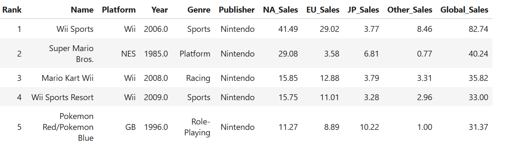
Pour voir la description des différents champs de colonne je vous renvoie vers le lien kaggle ou une descrption du dataset est effectué
Contexte / Objectif du projet
Ce projet consiste à analyser le dataset Video Game Sales (VGSales), un ensemble de données publié en 2016 qui recense plus de 16 000 jeux vidéo sortis entre les années 1980 et 2016.
L’objectif principal est de réaliser une analyse exploratoire (EDA) afin de mieux comprendre la répartition des jeux, les tendances du marché, les plateformes dominantes et les genres les plus populaires.
Le projet a été séparé en plusieurs étapes :


1) Partie data cleaning et exploration initial du Dataset
Avant de passer au nettoyage des données, j’ai pris le temps d’examiner le dataset afin d’en comprendre la structure et les particularités. Cette étape préliminaire m’a permis d’identifier les variables clés, de repérer les valeurs manquantes ou incohérentes, et de mieux cerner la logique du jeu de données. Comprendre le dataset avant toute manipulation est essentiel pour garantir la qualité du nettoyage et assurer la fiabilité des analyses à venir.
Exploration initial du dataset
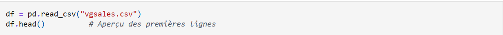
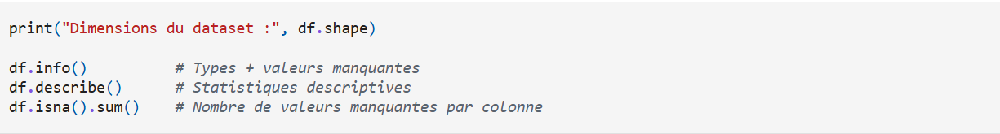
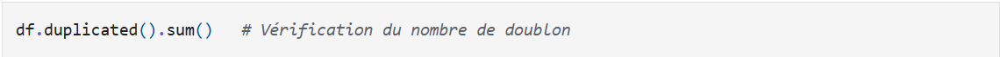
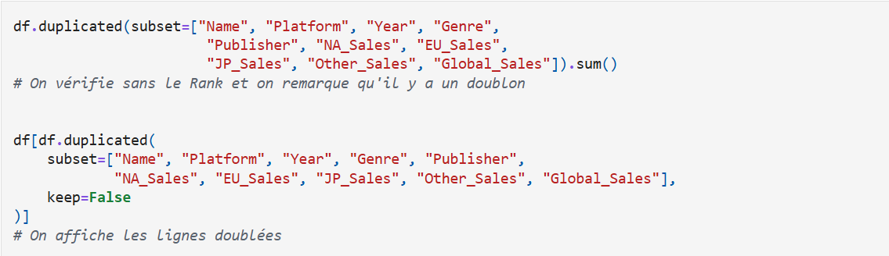
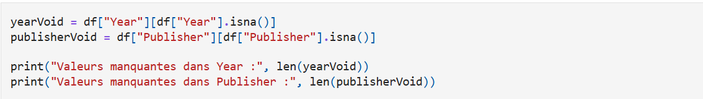
Après l'exploration initiale du dataset j'ai pu en conclure :
- L’exploration initiale du dataset montre que la colonne Publisher contient 58 valeurs manquantes, tandis que la colonne Year en contient 271. Ces valeurs manquantes expliquent pourquoi Year est au format float : les NaN obligent pandas à utiliser un type numérique compatible.
- Aucune ligne du dataset n’est strictement identique à une autre. Cependant, cette vérification doit être refaite en excluant la colonne Rank, car celle‑ci est unique pour chaque enregistrement et empêcherait la détection de doublons réels.
- La colonne Publisher contient 58 valeurs manquantes, et la colonne Year en contient 271. Les valeurs manquantes dans Publisher peuvent être remplacées par "Unknown", ce qui est cohérent pour une variable textuelle. En revanche, les valeurs manquantes dans Year doivent rester sous forme de NaN tant que le nettoyage n’est pas terminé.
- En excluant la colonne Rank (colonne qui est unique) il y a effectivement bien des doublons a traiter lors du nettoyage.
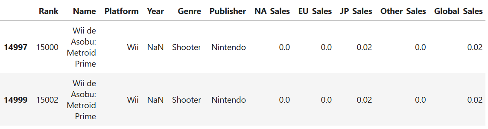
Nettoyage du dataset
Voici les 3 grandes étapes de cette partie nettoyage :
- Suppression des doublons
- Remplacement des vides dans Publisher
- Conversion de Year en entier
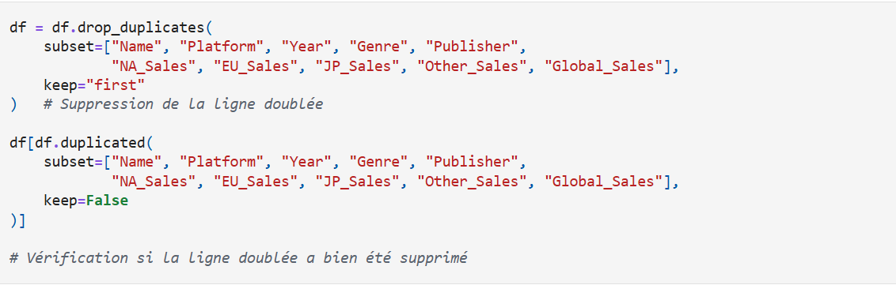
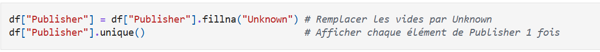
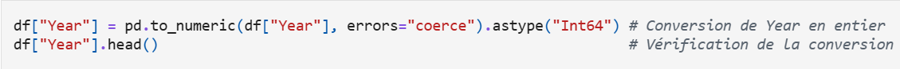
2) Data visualisation
Analyse : 4 questions explorées via groupby et agrégations :
- Ventes globales par genre
- Évolution des ventes par décennie
- Top 10 des plateformes par ventes globales
- Différences de préférences par genre selon les régions (NA / EU / JP)
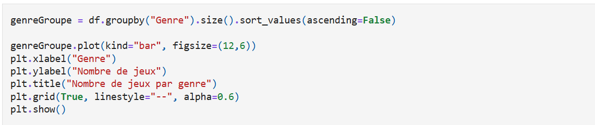
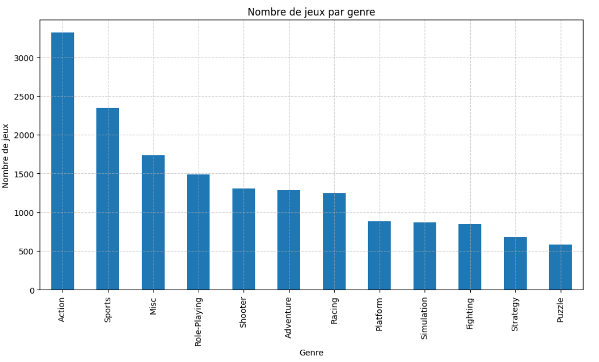
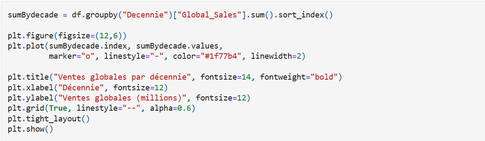
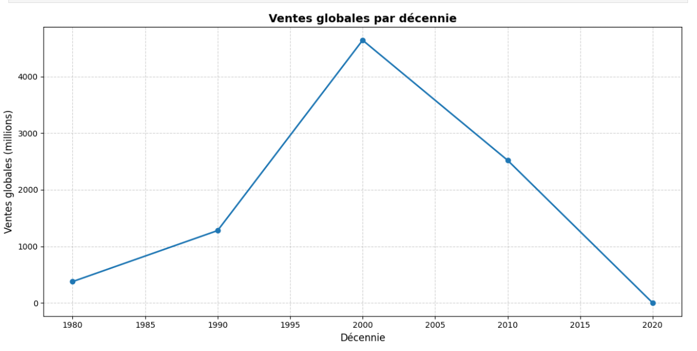
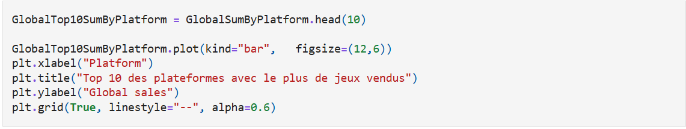
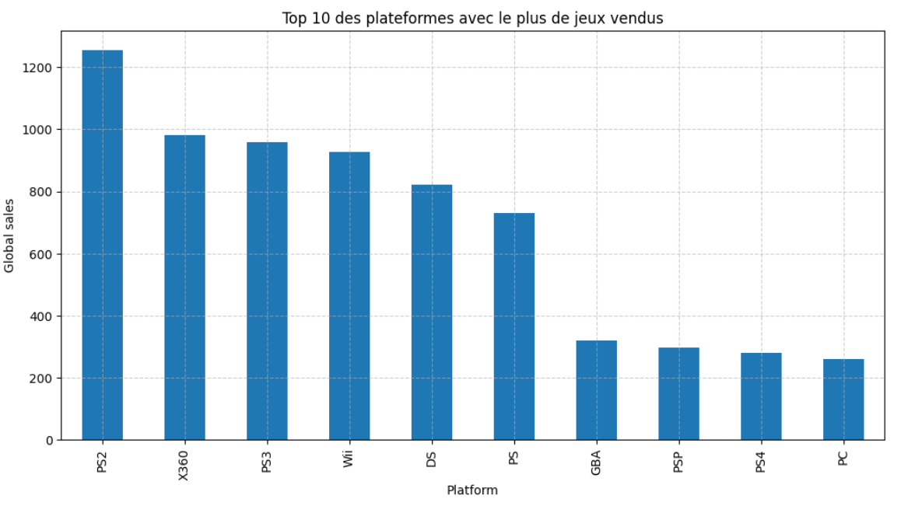
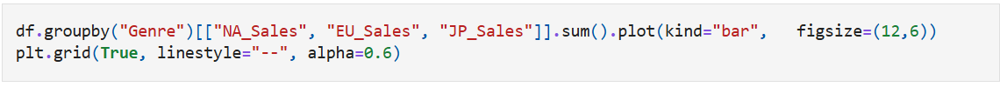
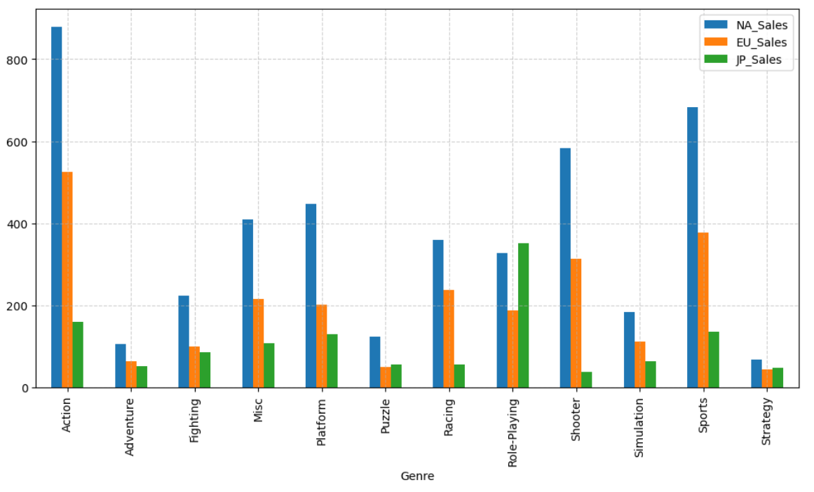
Ces visualisations permettent de mieux comprendre les dynamiques du marché du jeu vidéo. Elles révèlent des tendances fortes : domination du genre Action, importance des années 2000, rôle central de certaines plateformes et différences culturelles marquées entre les régions. Ces insights constituent la base de la partie KPI qui suit.
3) Résultats clés / Insights
- Le genre Action domine largement le marché : avec plus de 1 750 millions d'unités vendues, il représente environ 20 % des ventes globales, loin devant Sports (~1 300 M) et Shooter (~1 050 M).
- Le pic des ventes se situe dans les années 2000 : les ventes mondiales ont crû régulièrement des années 1980 jusqu'à atteindre leur maximum dans les années 2000, avant de décliner. Ce déclin apparent dans les années 2010 et 2020 est à nuancer : le dataset ayant été collecté vers 2016, les données de ces décennies sont incomplètes.
- La PS2 est la plateforme la plus vendue de l'histoire : avec plus de 1 250 millions d'unités vendues, elle devance largement la X360 (~980 M) et la PS3 (~960 M).
- Des préférences régionales très distinctes : l'Amérique du Nord et l'Europe sont dominées par les genres Action et Sports, tandis que le Japon montre une préférence marquée pour les Role-Playing Games (RPG), dont les ventes y sont proportionnellement bien plus élevées qu'en NA et EU.
4) Bilan
Ce projet m’a permis de mettre en pratique un ensemble de compétences essentielles en data :
- nettoyage et préparation de données (gestion des NaN, doublons, types)
- manipulation avancée avec Pandas (groupby, agrégations, filtres)
- visualisations avec Matplotlib
- interprétation des résultats et formulation d’insights
- structuration d’un projet analytique clair et documenté